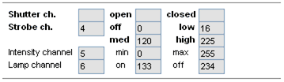

Table of Contents
Fixture Creator - Lamp Configuration
The configuration of the lamp panel can be done in 4 basic ways.
1: Shutter, strobe and intensity and lamp control are on separate channels.
2: Shutter, strobe on same channel and intensity and lamp control are on separate channels.
3: Strobe, intensity and lamp control are on separate channels and shutter are not defined.
4: When no shutter or intensity channel is available.
1: Shutter, strobe and intensity and lamp control are on separate channels.
In Fixture Creator as example the configuration are:
Shutter channel is 3
Closed value is 0
Open value is 255
Strobe Channel is 4
Strobe off is 0 to 15 so it is set to 0
Strobe slow to fast is 16 to 255
So Low is set to 16, Med to 135, High to 255
Intensity Channel is 5
From no light to full light 0 to 255.
Lamp Channel 6
Lamp off value is 234
Lamp on value is 133
The functionality are then straight forward.

Bulp “On”, Intensity “Max”, Shutter “Open” and there will be light.
Bulb.
“On” and “Off” will set the value in this control channel to the on and off value.
The “OFF” has to pressed 4 seconds before it is switched off.
This is to avoid the user from by accident to turn off the bulb.
With some fixtures it takes long time before the bulb can be turned on again. (It can be a long time without light and a disaster for a show)
Shutter.
“Open” and “Closed” sets the on and off value for this channel.
Additional it sets the strobe channel to its off value. Here the value is 0 on channel 4.
The light are set to the level set in the intensity channel.
Strobe.
“Low”, “Mid” and “High” sets the values in this channel and thereby the flash rate.
The fader goes from 0 to 100% and it is related to the low and high value.
This means 0% is equal the value 16 and 100% is equal the value 255
To turn off the strobe either Shutter “Closed” or “Open” are to be pressed.
Intensity.
This is only available with a fader and here the 0% to 100% correspond to the value 0 to 255.
“Black Out”
Black Out is in the main window of Freestyler. It has the same function as Shutter Open and Closed.
This is a way to control the shutter on all fixtures with one button.
See Blackout
Note: You can add icons for extra features in the Macro menu.
The “Default” icon have be added in the Macro panel and the Show in parameter set to Lamp.
By pressing the white + in the green triangle (Down left) in the lamp Panel the extra icons is shown.
For further details see. Fixture Creator - Macro Configuration
{kind=link}
2: Shutter, strobe on same channel and intensity and lamp control are on separate channels.
Here the strobe are on same channel but have different values for the functionality.

Shutter and Strobe Channel is 4
“Closed” and Strobe off value is 0
“Open” and Strobe off value is 255
Strobe slow to fast is 16 to 225
So Low is set to 16, Med to 120, High to 225
Intensity Channel is 5
From no light to full light 0 to 255.
Lamp Channel 6
Lamp off value is 234
Lamp on value is 133
The functionality are then straight forward.
Bulp “On”, Intensity “Max”, Shutter “Open” and there will be light.
Bulb.
“On” and “Off” will set the value in this control channel to the on and off value.
The “OFF” has to pressed 4 seconds before it is switched off.
This is to avoid the user from by accident to turn off the bulb.
With some fixtures it takes long time before the bulb can be turned on again. (It can be a long time without light and a disaster for a show)
Shutter.
“Open” and “Closed” sets the on and off value for this channel
In this case the same value turns off the strobe functionality.
The light are set to the level set in the intensity channel.
Strobe.
“Low”, “Mid” and “High” sets the values in this channel and thereby the flash rate.
The fader goes from 0 to 100% and it is related to the low and high value.
This means 0% is equal the value 16 and 100% is equal the value 225
To turn off the strobe either Shutter “Closed” or “Open” are to be pressed.
Intensity.
This is only available with a fader and here the 0% to 100% correspond to the value 0 to 255.
“Black Out”
Black Out is in the main window of Freestyler. It has the same function as Shutter Open and Closed
This is a way to control the shutter on all fixtures with one button.
See Blackout
Note: You can add icons for extra features in the Macro menu.
The “Default” icon have be added in the Macro panel and the Show in parameter set to Lamp.
By pressing the white + in the green triangle (Down left) in the lamp Panel the extra icons is shown.
For further details see. Fixture Creator - Macro Configuration
3: Strobe, intensity and lamp control are on separate channels and shutter are not defined.

Strobe Channel is 4.
Strobe off value is 0
Strobe slow to fast is 16 to 225
So Low is set to 16, Med to 120, High to 225
Intensity Channel is 5
From no light to full light 0 to 255.
Lamp Channel 6
Lamp off value is 234
Lamp on value is 133
The functionality are in this case intelligent.
It uses intensity to give the shutter effect and the at the same time control the off value for the shutter.
Bulp “On”, Intensity “Max”, Shutter “Open” and there will be light.
Bulb.
“On” and “Off” will set the value in this control channel to the on and off value.
The “OFF” has to pressed 4 seconds before it is switched off.
This is to avoid the user from by accident to turn off the bulb.
With some fixtures it takes long time before the bulb can be turned on again. (It can be a long time without light and a disaster for a show)
Shutter.
“Closed” sets the “off” value for Strobe channel. In this case the value 0 on channel 4
And it sets the intensity value to Min. In this case the value is 0 on channel 5.
“Open” sets the “off” value for Strobe channel. In this case the value 0 on channel 4
And it sets the intensity value to Max. In this case the value is 255 on channel 5.
Intensity are to be set after “Open” because open affects this channel.
Strobe.
“Low”, “Mid” and “High” sets the values in this channel and thereby the flash rate.
The fader goes from 0 to 100% and it is related to the low and high value.
This means 0% is equal the value 16 and100% is equal the value 225
To turn off the strobe either Shutter “Closed” or “Open” are to be pressed.
Intensity.
This is only available with a fader and here the 0% to 100% correspond to the value 0 to 255.
Intensity is affected by the Shutter buttons.
“Black Out”
Black Out is in the main window of Freestyler. It has the same function as Shutter Open and Closed
This is a way to control the shutter on all fixtures with one button.
See Blackout
Note: You can add icons for extra features in the Macro menu.
The “Default” icon have be added in the Macro panel and the Show in parameter set to Lamp.
By pressing the white + in the green triangle (Down left) in the lamp Panel the extra icons is shown.
For further details see. Fixture Creator - Macro Configuration
{kind=link}
4: When no shutter or intensity channel is available.
In this example a Winner MK II is used.
Looking into the DMX table the strobe channel (CH1) has more strobe functionality and therefore some unwanted effect can occur.
The strobe can be with Gobo, Color and Gobo + Color.
The shutter functionality is on the Gobo wheel, Blackout and Open.
If the fixture is configured so the gobo wheel, Open and Blackout, is used as shutter then it will change the gobo when strobe is stopped by pressing the Closed or Open button.
Example:
Strobe with gobo 6.
By pressing the Closed or Open button to stop strobe the gobo shift to Blackout or Open.
The intention was to just keep gobo 6 and stop the strobe.
All gobos that the gobo wheel passes on it’s way from gobo 6 to open / blackout will be shown for a short second.
So in this case using the shutter channel gives an unwanted effect.
Strobe Channel is 1.
Strobe off value is 0
Strobe slow to fast for gobo is 174 to 252
So Low is set to 174, Med to 214, High to 252
The fader only cover the gobo strobe.
Set from 10 to 255 it will cover speed for all combinations.
What range the fader in the lamp panel are to cover can be discussed for a long time but remember the full range can always be accessed via the fader panel (Left side of Freestyler window)
Also the use of macros can be helpful.
In this case shutter channel is set to 1 and only closed value is entered.
Note:
There has to be defined at least one function more than strobe else the Lamp Panel will not be shown / available.
An unwanted effect with this configuration is that the “Black Out” Button in the main window of Freestyler only stop the strobe.
So here is a trade off where the Black Out don’t work.
If the Black Out is a must then the Gobo wheel are to be in the Shutter Channel.
Strobe with gobo 6 will then be a two step solution when you want to stop strobe.
First “Open” then select “gobo 6” and you will see the gobo from gobo 6 to open and the back to gobo 6, during the shift.
To turn on light the macro in the bottom are to be used or one of the gobos in the gobo panel. (Not shown)
Shutter.
In this case shutter only has the functionality to stop the strobe.
It will not turn on or off the light.
Strobe.
“Low”, “Mid” and “High” sets the values in this channel and thereby the flash rate.
The fader goes from 0 to 100% and it is related to the low and high value.
This means 0% is equal the value 174 and100% is equal the value 252
To turn off the strobe either Shutter “Closed” or “Open” are to be pressed.
Macro.
In a case like this where the shutter channel and the strobe channel interact macros can be of a great help.
How to define the macros are not described here but the function is here.
The 6 “Gobo + Color” icons control channel 1 values from 10 to 91
The 6 “Color” icons control channel 1 values from 92 to 173
The 6 “Gobo” icons control channel 1 values from 174 to 255
The 2 “Black” and “Open” icons controls Channel 2 values 0 and 11.
For further details see. Fixture Creator - Macro Configuration
“Black Out”
Black Out is in the main window of Freestyler. It has the same function as Shutter Open and Closed
In this case the function don't open and close the shutter but just turn off the strobe.
The open and close is of the shutter in only operated by macro and not linked to the “Black Out”
See Blackout
{kind=link}
{kind=link}
{kind=link}